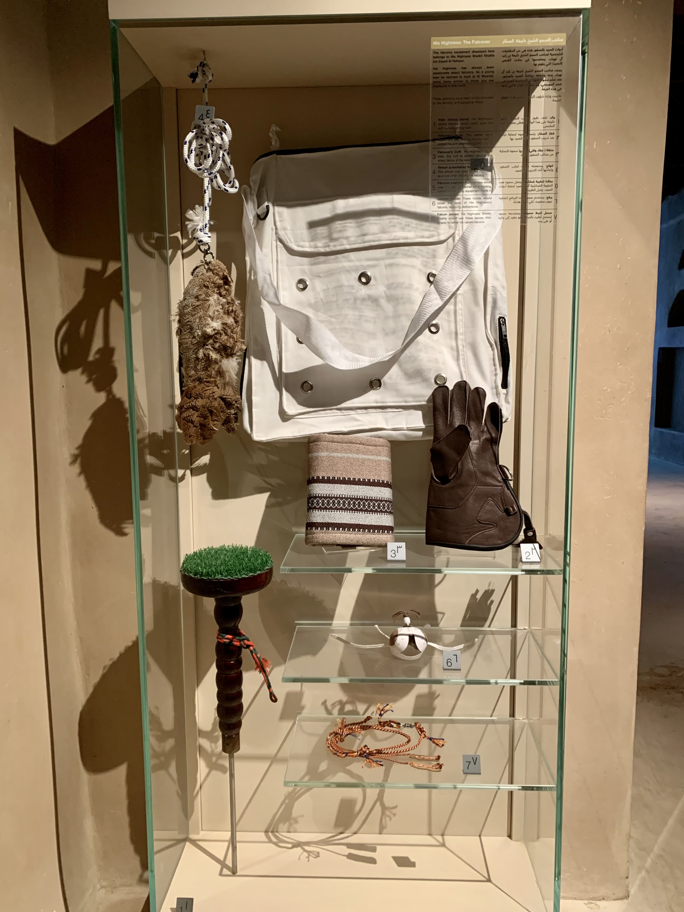
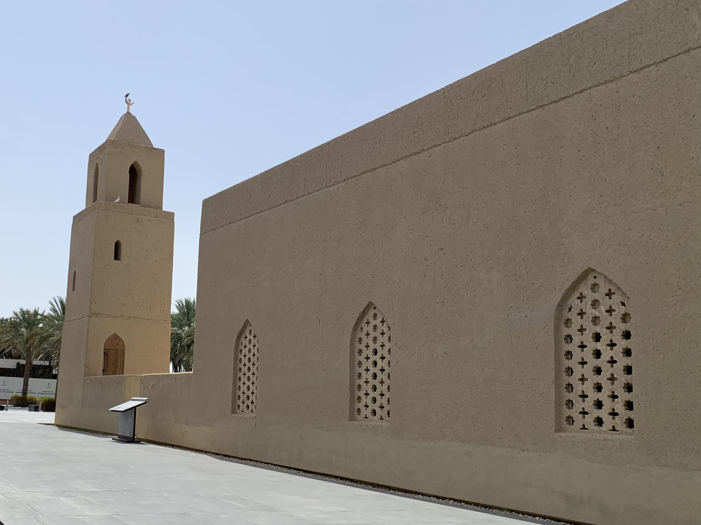

قصر المويجعي مسقط رأس الشيخ خليفة بن زايد آل نهيان. يقع القصر قرب واحة المويجعي، الواحة الصغرى في العين، التي تبعد عنه 500 مترًا جنوبًا، والتي يغذيها فلج المويجعي.
آثار فلج المويجعي عثر عليها أثناء الترميم والتنقيب. المصدر: صورة معروضة في أجهزة معرض القصر.
بنى القصرَ الشيخ خليفة بن زايد الأول بين عامي 1905 و1909م. ثم انتقل ملك القصر إلى ابنه محمد بعد وفاته. تزوج الشيخ زايد بن سلطان من ابنة الشيخ محمد: الشيخة حصة بنت محمد، فأهدى الشيخُ محمد القصرَ إلى الشيخ زايد بمناسبة زواجه من ابنته عام 1946، وفي هذا العام أضحى الشيخ زايد ممثل الحاكم في العين، واتخذ من القصر مقرًّا له.
الحصن مستطيل الشكل، بنيت في زواياه أبراج سوى الزاوية الجنوبية الغربية. وبابه متجه نحو الجنوب.
على يمين الباب خارجًا، ترى بناءً طينيًّا صغيرًا، قد كان في السابق مرآبًا للشيخ زايد، وقد أزيل لاحقًا عندما رحل الشيخ زايد وعائلته عن القصر.
صورة قديمة للقصر، ويظهر فيها المسجد على هيئته السابقة، وترى المرآب ملاصقًا للبرج الجنوبي الشرقي. التقط الصورة الرحالة ويلفرد ثيسجر عندما قدم العين عام 1949، المصدر: متحف بيت ريفرز
أُقيم في فناء القصر معرض لعرض بعض مقتنيات الشيخ خليفة بن زايد رحمه الله، وبعض ما وُجد أثناء الترميم.
البشت الذي كان يرتديه الشيخ خليفة بن زايد رحمه اللهغترة الشيخ خليفة رحمه الله، مطرز عليه شعار دولة الإماراتخناجر الشيخ خليفة رحمه الله، الأيسر يعود إلى العام 1967 منقوش عليه اسمه، كان يرتديه عنما كان ممثل الحاكم في المنطقة الشرقية. والأيمن يعود إلى عام 1971، عليه شعار دولة الإمارات. وكلاهما من الذهب.أقلام ذهبية استخدمها الشيخ خليفة رحمه الله في توقيع الوثائق الرسمية.قطعة نقدية نحاسية، تعود إلى ما بين القرن السادس عشر والثامن عشر.عملة عمانية ترجع إلى عام 1897.عملة بريطانية هندية من العام 1946استخدمت هذه البئر لري النخيل داخل القصر في الثمانيناتالبئر من الداخل، ويمكن إبصار جذور شجرة لأن القصر زُرعت فيه أشجار في الثمانينات

معدات الصيد بالصقور من مقتنيات الشيخ خليفة بن زايد رحمه الله استخدم البرج الشمالي الغربي للسكن، وهو مكون من ثلاثة طوابق.الدرج المؤدي إلى الطابق الأولالطابق الثاني، وفيه غرفة تؤدي إلى المجلسالمنظر باتجاه الغرب، وترى النخيل خلفهنَّ ديوان ممثل الحاكم.البرج الشمالي الشرقي الذي كان يضم غرف المعيشة في أول أمر القصر، ثم لما انتقل الشيخ زايد رحمه الله من القصر، أزيل هذا البرج. ثم أُعيد بناؤه في أواخر السبعينيات على النمط الأصلي للبناء.البرج الجنوبي الشرقي. هو البرج الأكثر حفاظًا على شكله الأصلي، إذ لم يجدد فيه سوى حاجز الشرفة والدرج المؤدي إلى أعلاه. استُخدم هذا البرج لأغراض المراقبة والاستطلاع.
المسجد
قرب الحصن يقع المسجد الذي يعود إلى السنوات الأولى من القرن العشرين. وُسِّع المسجد عد ترميمه وأضيفت المئذنة التي لم تكن موجودة سابقًا.

المسجد من الداخل.
واحات العين وبعض وديانها. من لوحة معروضة أمام القصر.
القصر واقع في المويجعي على شارع خليفة بن زايد، مقابل ديوان ممثل الحاكم في العين.